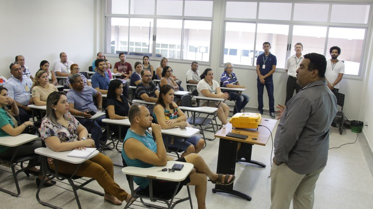
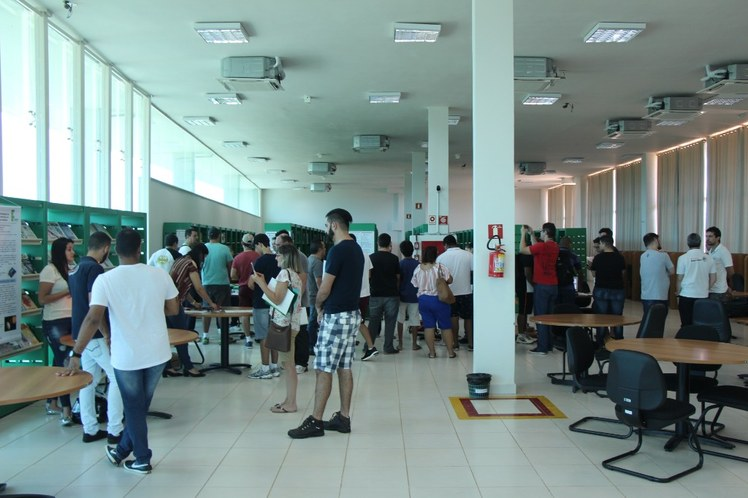
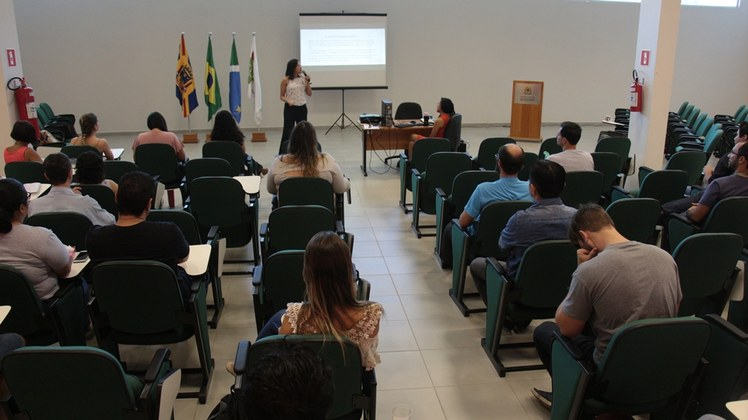

O campus Corumbá do Instituto Federal de Mato Grosso do Sul (IFMS) é uma instituição de ensino localizada na cidade de Corumbá, no estado de Mato Grosso do Sul. O campus oferece uma variedade de cursos técnicos e superiores, com o objetivo de promover a formação profissional de qualidade e contribuir para o desenvolvimento da região.
A estrutura física do IFMS campus Corumbá é projetada para atender às necessidades educacionais dos estudantes e proporcionar um ambiente propício ao aprendizado. O campus conta com um conjunto de edifícios que abrigam salas de aula, laboratórios, biblioteca, auditório e espaços administrativos.
As salas de aula são espaços amplos e confortáveis, equipados com recursos audiovisuais para facilitar o processo de ensino e aprendizagem. Os laboratórios são especializados e oferecem infraestrutura adequada para as aulas práticas, permitindo que os alunos apliquem os conhecimentos teóricos na prática.
A biblioteca do campus Corumbá é um local importante para os estudantes, oferecendo um acervo diversificado de livros, revistas, periódicos e acesso a recursos digitais. Ela é um espaço de estudo e pesquisa, onde os alunos podem realizar suas atividades acadêmicas e buscar informações relevantes para seus estudos.
Além disso, o campus possui um auditório, utilizado para palestras, seminários, apresentações e eventos acadêmicos. O auditório é equipado com recursos audiovisuais e oferece um ambiente adequado para a realização dessas atividades.
A estrutura administrativa do campus é composta por salas destinadas aos setores administrativos, como secretaria acadêmica, coordenações de cursos, direção e coordenação de ensino. Esses espaços são essenciais para o bom funcionamento da instituição e para o atendimento aos alunos.
Além dos prédios principais, o campus Corumbá possui áreas de convivência ao ar livre, como pátios e jardins, que proporcionam espaços de integração e descanso para os estudantes.
O IFMS campus Corumbá também investe em tecnologia, oferecendo acesso à internet em todos os seus prédios e laboratórios, possibilitando que os alunos utilizem recursos online e desenvolvam habilidades digitais essenciais para o mercado de trabalho atual.
Em resumo, a estrutura física do IFMS campus Corumbá é projetada para proporcionar um ambiente adequado ao aprendizado e desenvolvimento dos estudantes. Com salas de aula, laboratórios, biblioteca, auditório e espaços administrativos bem equipados, o campus oferece condições para uma formação profissional de qualidade e contribui para o crescimento educacional e econômico da região.